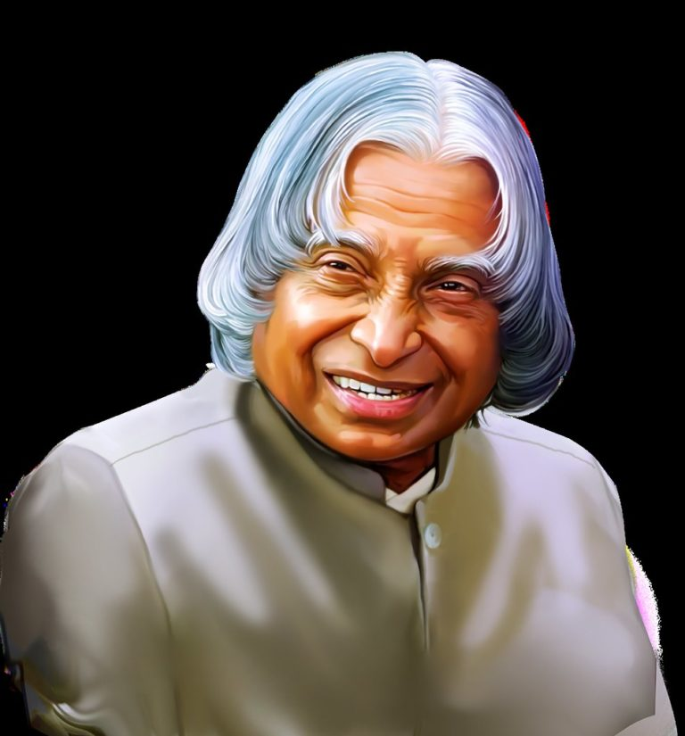

Avul Pakir Jainulabdeen Abdul Kalam was an Indian aerospace scientist and statesman who served as the president of India from 2002 to 2007. Born and raised in a Muslim family in Rameswaram, Tamil Nadu, Kalam studied physics and aerospace engineering
Achievements
- Developed INDIA's first satellite launch vehicle
- Led India's succesful nuclear tests
- Wrote books like "Wings of fire" and "India 2020"